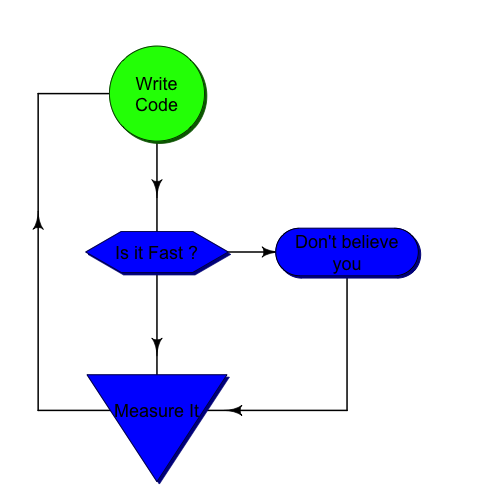

Améliorer les performances de R
2014-2015
Matthias Oehler
Vice Président Data @Makazi
Sommaire - Session 3
MESURER LA PERFORMANCE
Introduction

Analyser
- Identifier les goulots d'étranglement d'un code peut être très chronophage dès lors que le nombre de ligne de code devient élevé
- C'est cependant une étape indispensable pour examiner les temps de traitement de chaque partie du programme
- Le programme peut fonctionner assez rapidement sur le jeu de données test mais qu'en sera t'il sur des "vrais" données
- Ce doit etre un reflexe chez le Data Scientist
System.time()
# Calcul de la somme cumulée du vecteur x
x <- runif(2e4)
system.time({
cusum <- NULL
for (i in 1:length(x)) cusum <- c(cusum,sum(x[1:i]))
})
user system elapsed
3.099 1.064 4.167
usercorrespond au temps CPU chargé de l'éxecution de l'appel des instructions utilisateursystemcorrespond au temps CPU chargé de l'éxecution coté système
Question : Comment améliorer cette fonction ?
System.time()
# Calcul de la somme cumulée du vecteur x
x <- runif(2e4)
system.time({
cusum <- numeric(length(x))
for (i in 1:length(x)) cusum[i] <- sum(x[1:i])
})
user system elapsed
2.537 0.675 3.222
- Modification : Préparation du vecteur de résultat
- Gain de 25% de temps
Question : Mais encore ... ?
System.time()
# Calcul de la somme cumulée du vecteur x
x <- runif(2e4)
system.time({
cusum <- x
for (i in 2:length(x)) cusum[i] <- cusum[i-1]+cusum[i]
})
user system elapsed
0.039 0.000 0.038
- Modification : Suppression des calculs répétitifs des sum
- 100x plus rapide que la version précédente
Question : On peut faire mieux encore mieux ?
System.time()
# Calcul de la somme cumulée du vecteur x
x <- runif(2e4)
system.time({
cusum <- cumsum(x)
})
user system elapsed
0 0 0
Hum ??? Est ce que cela a vraiment marché ? Essayons avec un vecteur 100x plus grand
x<- runif(2e6) # avec un vecteur 100x plus grand ?
system.time(cusum <- cumsum(x))
user system elapsed
0.013 0.004 0.017
Yes !
Ok bien compris. Mais en plus simple ?
Microbenchmark (package)
f1 <- function(x) {
cusum <- NULL
for (i in 1:length(x)) cusum <- c(cusum,sum(x[1:i]))
}
f2 <- function(x) {
cusum <- numeric(length(x))
for (i in 1:length(x)) cusum[i] <- sum(x[1:i])
}
f3 <- function(x) {
cusum <- x
for (i in 2:length(x)) cusum[i] <- cusum[i-1]+cusum[i]
}
f4 <- function(x) {
cusum <- cumsum(x)
}
Microbenchmark (package)
library(microbenchmark)
x<-runif(1e3)
microbenchmark(f1(x),f2(x),f3(x),f4(x))
Loading required namespace: multcomp
Unit: microseconds
expr min lq mean median uq max neval
f1(x) 8103.796 8800.146 13341.73 10937 18580.26 23007 100
f2(x) 7035.700 7795.010 10592.14 8443 10791.17 22588 100
f3(x) 1646.538 1713.178 2088.85 1787 1988.32 11603 100
f4(x) 5.688 6.926 10.53 11 12.31 22 100
- Un même résultat peut etre obtenu de plusieurs manières différents. Mais il y a un fable nombre de "bonnes" manières. Ici, la bonne manière est 1000x plus rapide que la mauvaise manière
Conclusion : Toujours préférer les fonctions natives et déjà compilées.
Conclusion
- System.time et microbenchamrk permettent de comparer des bouts de code entre eux assez simplement
- Ils sont utiles lorsque l'on a identifié où le code prend du temps d'exécution
- Mais comment trouver les parties de code consommatrices de temps dans des milliers de lignes de code ?
Profiling du code R
La fonction
Rprof()lance le profiler de RLa fonction
summaryRprof()sort les statistiques à partir du fichier généré parRprof()Rprof()n'est utile que si le temps d'exécution code est "mesurable" (> 1–10msecs)
n <- 1e5
y <- gl(2, 100, n, labels = c("A","B"))
x <- runif(n)
Rprof(tmp <- tempfile())
lm(x ~ y)
Rprof()
srp <- summaryRprof(tmp)
unlink(tmp)
Info : tempfile() permet de générer un fichier vide dans un répertoire temporaire. Le fichier est supprimé par la fonction unlink()
head(srp$by.self)
self.time self.pct total.time total.pct
"lm" 0.06 27.27 0.22 100.00
"as.character" 0.06 27.27 0.06 27.27
".External2" 0.04 18.18 0.08 36.36
"anyDuplicated.default" 0.02 9.09 0.02 9.09
"is.na" 0.02 9.09 0.02 9.09
"structure" 0.02 9.09 0.02 9.09
print(head(srp$by.total))
total.time total.pct self.time self.pct
"lm" 0.22 100.00 0.06 27.27
".External2" 0.08 36.36 0.04 18.18
"as.character" 0.06 27.27 0.06 27.27
"model.response" 0.06 27.27 0.00 0.00
"[.data.frame" 0.04 18.18 0.00 0.00
"[" 0.04 18.18 0.00 0.00
Aller plus loin : d'autres packages existent : Rprof, profr, lineprof
LES BONNES PRATIQUES
SQRT
x <- runif(100)
microbenchmark(
sqrt(x),
x ^ 0.5
)
Loading required namespace: multcomp
Unit: nanoseconds
expr min lq mean median uq max neval
sqrt(x) 683 715.5 902.4 780.5 853 9991 100
x^0.5 848 867.0 1043.5 929.5 1044 8738 100
MEAN
microbenchmark(
"mean1" = mean(x),
"mean2" = sum(x) / length(x)
)
Loading required namespace: multcomp
Unit: microseconds
expr min lq mean median uq max neval
mean1 9.952 10.430 11.23 10.643 10.848 62.2 100
mean2 2.156 2.368 80.31 2.478 2.567 7784.6 100
SQRT
microbenchmark(
"[32, 11]" = mtcars[32, 11],
"$carb[32]" = mtcars$carb[32],
"[[c(11, 32)]]" = mtcars[[c(11, 32)]],
"[[11]][32]" = mtcars[[11]][32],
".subset2" = .subset2(mtcars, 11)[32]
)
Loading required namespace: multcomp
Unit: nanoseconds
expr min lq mean median uq max neval
[32, 11] 16799 17765.0 18969.2 18095.0 18837 63298 100
$carb[32] 2079 2630.5 3006.7 2946.0 3190 10639 100
[[c(11, 32)]] 6392 7622.0 8603.8 8228.5 8676 50032 100
[[11]][32] 5685 6995.5 7674.2 7345.0 7938 17918 100
.subset2 357 463.5 638.2 536.5 635 9725 100
SQRT
x1 <- x2 <- x3 <- x4 <- runif(1000)
microbenchmark(
"loop" = for (i in 1:length(x1)) if(x1[i]<=0.5) x1[i] <- 0,
"ifelse" = x2 <- ifelse(x2 <= 0.5, x2, 0),
"inplace" = x3[x3<=0.5] <- 0,
"inplace_whi" = x4[which(x4<=0.5)] <- 0
)
Loading required namespace: multcomp
Unit: microseconds
expr min lq mean median uq max neval
loop 1020.71 1085.27 1523.78 1355.79 1958.80 3856.46 100
ifelse 162.45 166.81 204.71 190.08 231.43 407.60 100
inplace 33.35 35.06 41.59 37.53 44.88 93.56 100
inplace_whi 11.86 14.65 19.08 17.87 20.72 57.95 100
Prepare vectors
f1 <- function() {
x <- NULL; for (i in 1:10000) x<-c(x,i)
}
f2 <- function() {
x <- numeric(10000); for (i in 1:10000) x[i]<i
}
microbenchmark(
"extend" = f1(), "fill" = f2()
)
Loading required namespace: multcomp
Unit: milliseconds
expr min lq mean median uq max neval
extend 156.784 163.269 172.115 166.386 174.730 252.07 100
fill 4.744 4.907 5.824 5.008 5.721 11.31 100
Compiler
f <- function(x) {
for (i in 2:length(x)) x[i] <- x[i-1]+x[i]; return(x)
}
library(compiler)
fc <- cmpfun(f)
microbenchmark(
"original" = f(x), "compiled" = fc(x), "internal" = cumsum(x)
)
Loading required namespace: multcomp
Unit: nanoseconds
expr min lq mean median uq max neval
original 187783 192763 205015 197127 201137 357625 100
compiled 36947 43474 46624 45822 48375 64172 100
internal 898 1030 1354 1180 1353 9088 100
data.table vs. data.frame
n <- 1e5
DF <- data.frame(x=sample(c("a","b","c"),n,replace=T), y=runif(n), v=1:n)
DT <- data.table(x=sample(c("a","b","c"),n,replace=T), y=runif(n), v=1:n)
setkey(DT,x)
data.table vs. data.frame
microbenchmark(
"DF.subset" = nrow(DF[which(DF$x=="b"),]),
"DT.subset" = nrow(DT["b",])
)
Loading required namespace: multcomp
Unit: milliseconds
expr min lq mean median uq max neval
DF.subset 11.45 12.573 14.231 12.767 16.448 21.875 100
DT.subset 1.67 2.085 2.344 2.149 2.297 7.226 100
data.table vs. data.frame
microbenchmark(
"DF.add" = DF$y <- 1,
"DT.add" = DT[,y:=1]
)
Loading required namespace: multcomp
Unit: microseconds
expr min lq mean median uq max neval
DF.add 957.7 2626.0 4776.1 3656.0 5380.1 86938 100
DT.add 458.4 598.4 712.6 727.4 834.2 1135 100
Aggregate
microbenchmark(
"DF.aggregation" = aggregate(DF$y,list(DF$x),sum),
"DT.aggregation" = DT[,y:=1]
)
Loading required namespace: multcomp
Unit: microseconds
expr min lq mean median uq max neval
DF.aggregation 69571.7 73596.9 79281.7 75168.3 77574.6 157016 100
DT.aggregation 398.7 593.1 797.3 656.9 809.6 5717 100